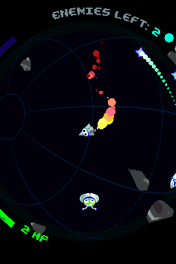
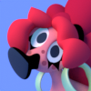
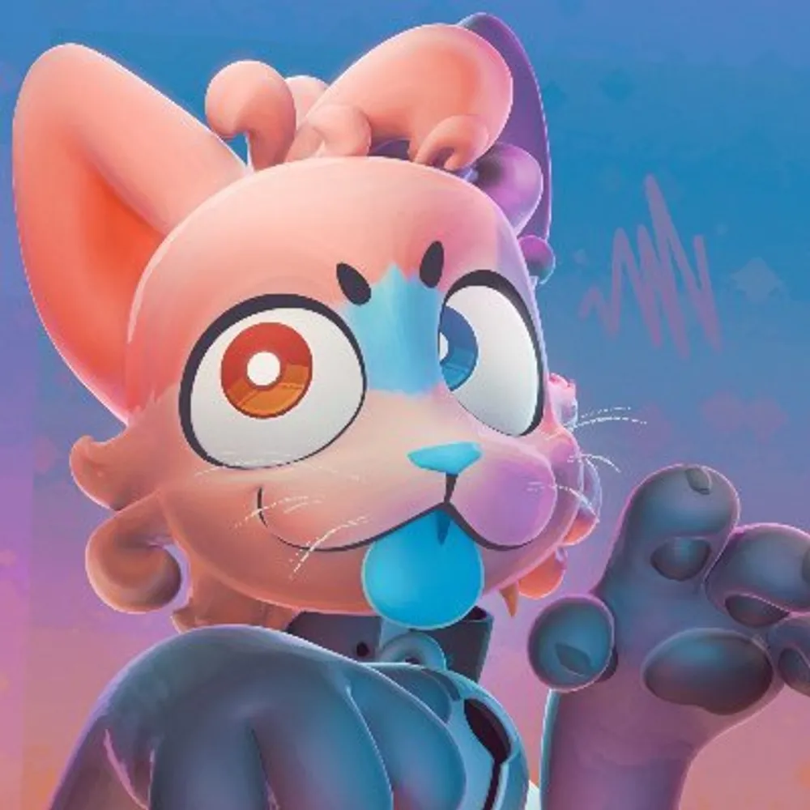
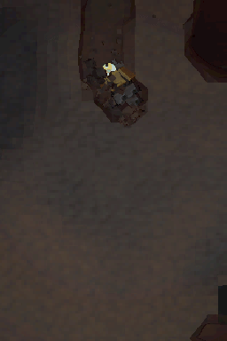

Made by:
 AttocorrectDesign, sphere math, shaders
AttocorrectDesign, sphere math, shaders

LezzlebitSfx, music, game code, juice
YakiYukiPixel art, art direction
Created by:
 AttocorrectProject lead, game code, shaders
AttocorrectProject lead, game code, shaders
LezzlebitSfx, music
YakiYukiPixel art, 3D models
Created by:


Lezzlebit3D art, shaders, code, music, sfx
A mod by 2Walker2 about the interloper